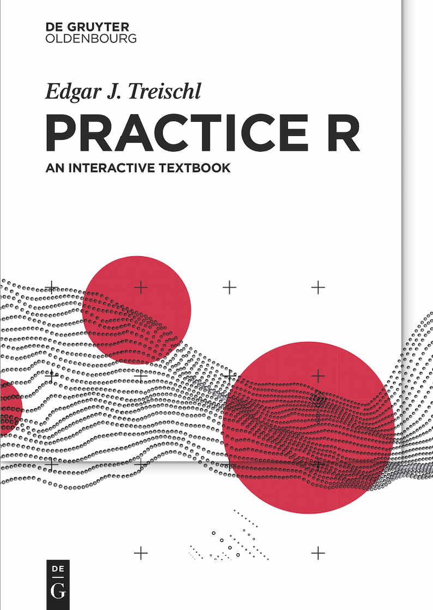

Many students learn to analyze data using commercial packages, even though there is an open-source software with cutting-edge possibilities: R, a programming language with countless cool features for applied empirical research.
Practice R introduces R to social science students, inspiring them to consider R as an excellent choice. In a non-technical pragmatic way, this book covers all typical steps of applied empirical research. Learn how to prepare, analyze, and visualize data in R. Discover how to collect data, generate reports, or automate error-prone tasks.
The book is accompanied by an R package. This provides further learning materials that include interactive tutorials, challenging you with typical problems of applied research. This way, you can immediately practice the knowledge you have learned. The package also includes the source code of each chapter and templates that help to create reports.
Practice R has social science students in mind, nonetheless a broader audience may use Practice R to become a proficient R user.
Installation
You can install PracticeR from my GitHub account:
# install.packages("devtools")
devtools::install_github("edgar-treischl/PracticeR")Book Preview 
When in doubt, consider reading the sample pages of Practice R. It shows the outline of the book via the table of content and it includes the first pages of the book. I outline what each chapter tries to achieve in more detail which hopefully will give an idea if Practice R might be right choice for you.
In addition, one example tutorial is online available which gives you an idea how the tutorials of the book work. The base R tutorial accompanies the second chapter of Practice R and discusses typical errors and struggles that (new) R users need to face.